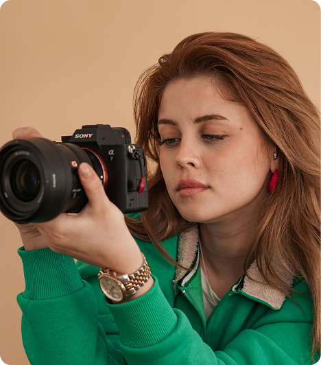

@joana.png★
Capture seus momentos
mais preciosos e
transforme-os em memórias eternas!!
Olá! Sou Joana Santos, fotógrafa especializada em eternizar histórias. Com um olhar sensível, transformo instantes em arte. Que tal registrarmos a sua?
